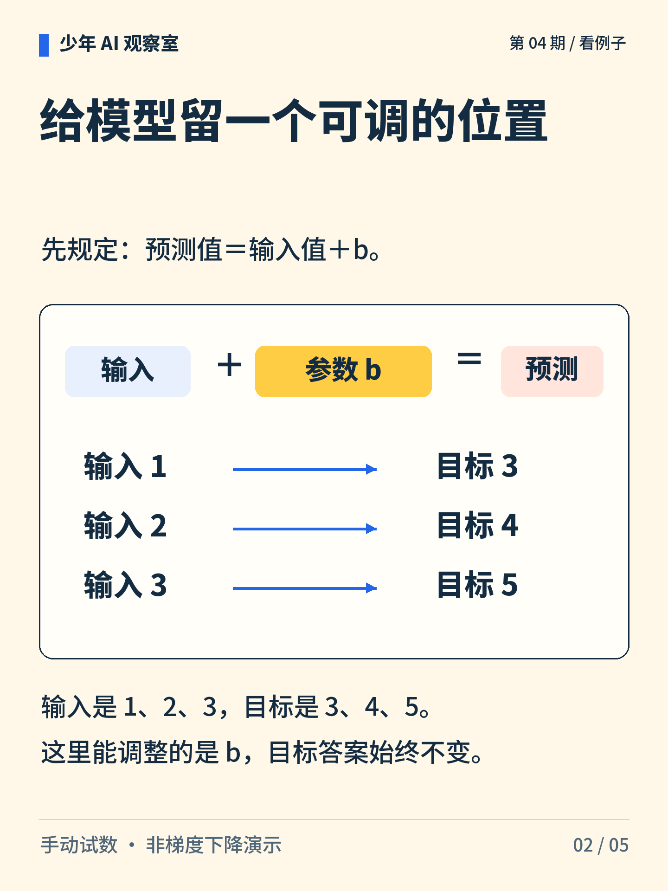
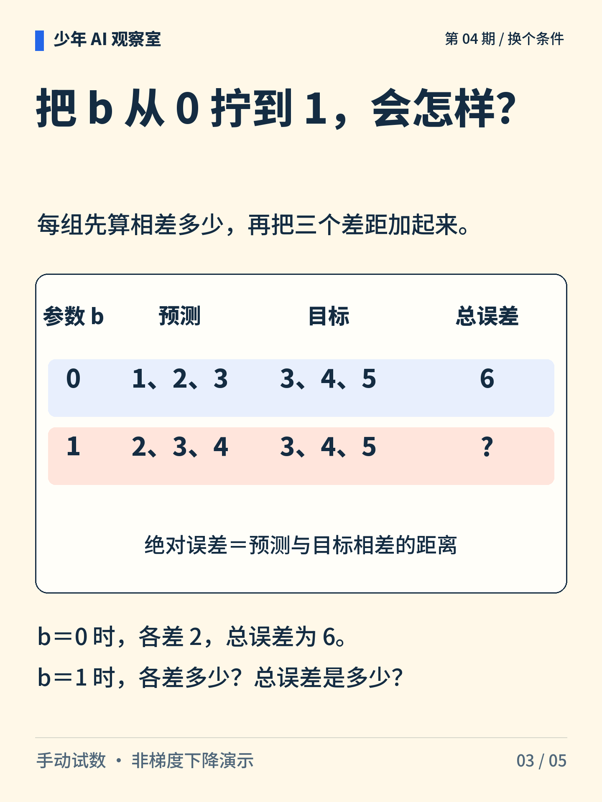
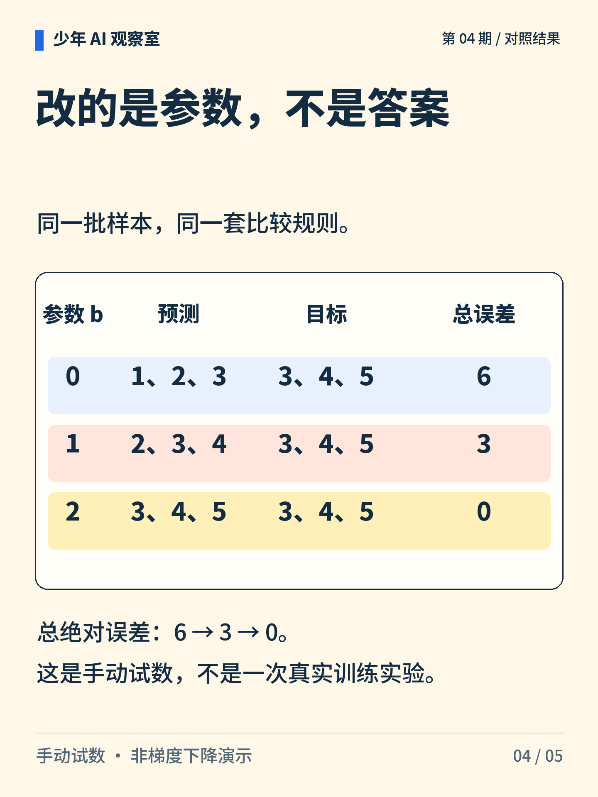
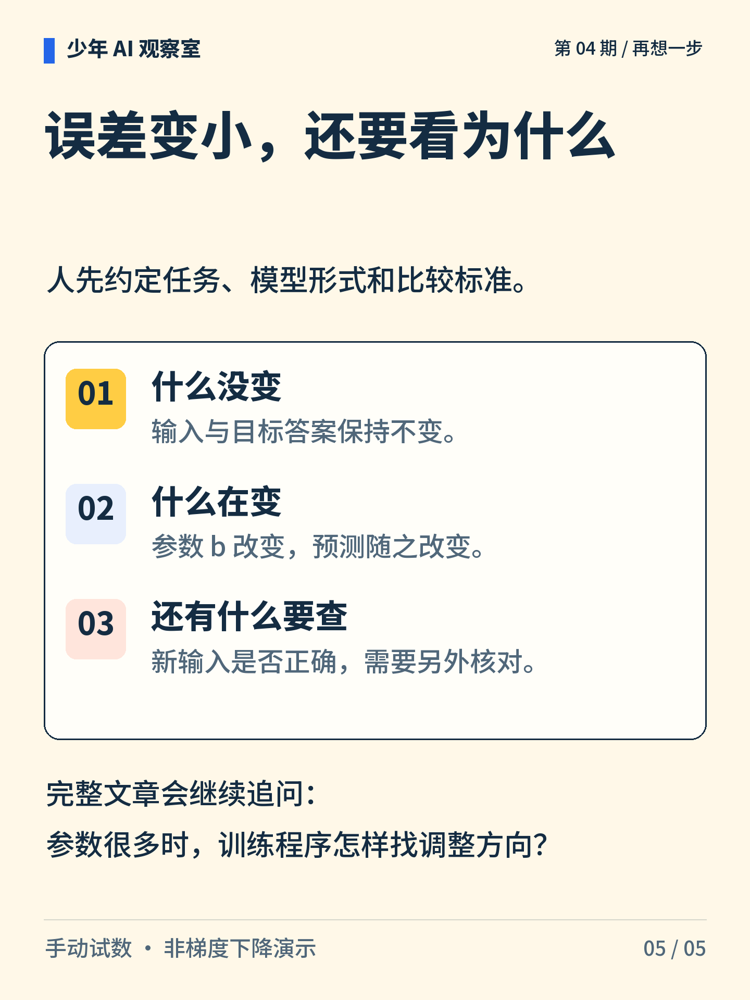

少年 AI 观察室 · 第 04 期
AI 答错以后，到底改了什么？
输入和目标答案都不动，只拧一个参数旋钮，预测就会改变。用三组输入和目标答案算一遍。

图解文字
旋钮 0、1、2 与三个加法算式，提示调整的是参数，输入与目标保持不变。

图解文字
模型形式为预测＝输入＋b。三组输入与目标为 1→3、2→4、3→5。

图解文字
b＝0 时预测为 1、2、3，每组差 2，总误差为 6；b＝1 时请计算三个差距。

图解文字
b＝1 时每组差 1，总误差为 3；b＝2 时预测与目标相同，总误差为 0。

图解文字
输入、目标与比较标准保持不变，参数和预测改变。当前样本的误差变小后，还要检查新样本。
想一想
把目标答案改成预测，误差也能变成零。这算完成原任务吗？
展开参考思路
不算。把目标改成预测，相当于修改了原任务的评分依据。原任务是让输入 1、2、3 分别对应目标 3、4、5；应保持目标不变，比较不同 b 的预测。
在同一任务和比较标准下，调整参数来改变预测。
预测＝输入＋b 是极简模型；误差指三个绝对误差的总和。这里手动试 b，不是梯度下降，也没有验证新样本上的效果。
正文首图为 AI 辅助生成的概念插画；第 2—5 张图按核对过的文字与规则绘制。
延伸阅读资料
文中算例与图解用于说明原理，不是实际模型的测评结果。研究结论对应以下资料。〔1〕 Google Developers，Linear regression（官方课程；访问日期：2026-10-05）。
https://developers.google.com/machine-learning/crash-course/linear-regression
〔2〕 Google Developers，Linear regression: Loss（官方课程；访问日期：2026-10-05）。
https://developers.google.com/machine-learning/crash-course/linear-regression/loss
〔3〕 Google Developers，Linear regression: Gradient descent（官方课程；访问日期：2026-10-05）。
https://developers.google.com/machine-learning/crash-course/linear-regression/gradient-descent
〔4〕 Google Developers，Linear regression: Hyperparameters（官方课程；访问日期：2026-10-05）。
https://developers.google.com/machine-learning/crash-course/linear-regression/hyperparameters
书目信息沿用原稿，本轮未重新核验外部网页的可访问性。